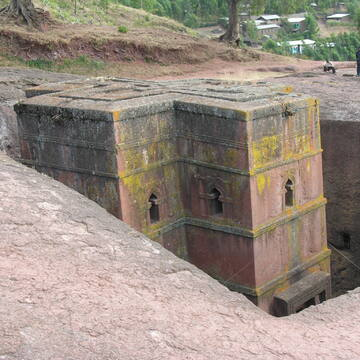

<body style="background-color: black;color: white;">
    Biete Medhani Alem, with its five aisles, is believed to be the largest monolithic church in the world, while Biete Ghiorgis has a remarkable cruciform plan.
     Most were probably used as churches from the outset,
     but Biete Mercoreos and Biete Gabriel Rafael may formerly have been royal residences. Several of the interiors are decorated with mural paintings.
Near the churches, the village of Lalibela has two storey round houses, constructed of local red stone, and known as the Lasta Tukuls.
 These exceptional churches have been the focus of pilgrimage for Coptic Christians since the 12th century.
Criterion (i): All the eleven churches represent a unique artistic achievement, in their execution, size and the variety and boldness of their form.
Criterion (ii): The King of Lalibela set out to build a symbol of the holy land, when pilgrimages to it were rendered impossible by the historical situation. 
In the Church of Biet Golgotha, are replicas of the tomb of Christ, and of Adam, and the crib of the Nativity. 
The holy city of Lalibela became a substitute for the holy places of Jerusalem and Bethlehem, and as such has had considerable influence on Ethiopian Christianity.
Criterion (iii): The whole of Lalibela offers an exceptional testimony to the medieval and post-medieval civilization of Ethiopia, including, next to the eleven churches, 
the extensive remains of traditional, two storey circular village houses with interior staircases and thatched roofs.

</body>